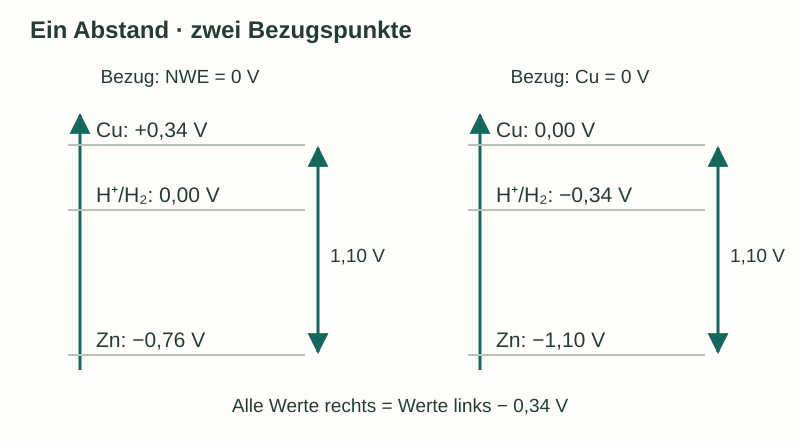

Informieren
Erklärung und Beispiel öffnen
Das Messgerät vergleicht zwei Anschlüsse
Ein Voltmeter zeigt die Potentialdifferenz zwischen zwei Halbzellen. Eine einzelne Metall/Metallion-Grenzfläche besitzt ein Elektrodenpotential, aber mit einer gewöhnlichen Spannungsmessung lässt es sich nicht isoliert als absoluter Wert bestimmen. Jeder zweite Messkontakt bringt eine weitere Grenzfläche ins Spiel.
Deshalb vereinbaren wir eine Bezugselektrode. Die Normalwasserstoffelektrode (NWE) erhält unter Standardbedingungen den Wert 0 V. Ein tabelliertes Elektrodenpotential beschreibt den Vergleich einer Halbzelle mit dieser Referenz. Ein negativer Wert bedeutet „niedriger als die Referenz“; er bedeutet nicht „keine Spannung möglich“.
U = E(Kathode) − E(Anode)
Für die freiwillig arbeitende galvanische Zelle ist die Kathode der Pluspol und die Anode der Minuspol. Bei einem Voltmeter gilt allgemeiner: Anzeige = Potential am roten Anschluss − Potential am schwarzen COM-Anschluss.
Beispiel: denselben Abstand anders zählen
Für Zink und Kupfer gelten unter Standardbedingungen E°(Zn²⁺/Zn) = −0,76 V und E°(Cu²⁺/Cu) = +0,34 V. Damit ist U° = +0,34 V − (−0,76 V) = 1,10 V. Würde man den Nullpunkt der Skala zur Kupferhalbzelle verschieben, änderten sich die Zahlenwerte beider Potentiale. Ihr Abstand bliebe gleich.

Ein Bezugspunkt funktioniert hier ähnlich wie eine Höhenangabe: Ob zwei Orte über dem Meeresspiegel oder über dem Schulhof gemessen werden, verändert ihren Höhenunterschied nicht.
A · Einen neuen Bezugspunkt verwenden
Gegeben sind Standardpotentiale bei 25 °C: Fe²⁺/Fe = −0,44 V; Cu²⁺/Cu = +0,34 V; Ag⁺/Ag = +0,80 V.
- Lege für ein gedankliches Vergleichssystem die Eisenhalbzelle auf 0,00 V. Bestimme die neuen Potentialwerte für Kupfer, Silber und die NWE.
- Berechne die Zellspannung einer galvanischen Fe/Cu-Zelle und einer Cu/Ag-Zelle jeweils auf beiden Skalen.
- Beurteile: „Nach dem Verschieben des Nullpunkts liefert die Eisenhalbzelle keine elektrische Energie mehr.“
Hilfe 1
Ändere bei allen Halbzellen den Zahlenwert um denselben Betrag. Eine Halbzelle allein ist noch keine vollständige Energiequelle.
Hilfe 2
Der neue Wert ergibt sich aus Eneu = Ealt − (−0,44 V). Bestimme die Zellspannung stets als Differenz der beiden Potentiale.
Musterlösung
- Fe: 0,00 V; Cu: +0,78 V; Ag: +1,24 V; NWE: +0,44 V.
- Fe/Cu: auf der NWE-Skala 0,34 − (−0,44) = 0,78 V; auf der neuen Skala 0,78 − 0,00 = 0,78 V. Cu/Ag: 0,80 − 0,34 = 0,46 V; neu 1,24 − 0,78 = 0,46 V.
- Die Aussage ist falsch. Der Nullpunkt ist eine Vereinbarung und verändert keine chemische Eigenschaft. In Verbindung mit einer geeigneten zweiten Halbzelle kann die Eisenhalbzelle weiterhin zu einer galvanischen Zelle gehören. Entscheidend sind Potentialdifferenz und Stoffumsatz.
B · Was lässt sich aus einer Spannung erschließen?
Eine idealisierte Messung zwischen den unbekannten Halbzellen A und B ergibt +0,62 V. Der rote Anschluss ist an B, COM an A angeschlossen.
- Finde drei verschiedene Zahlenpaare E(A), E(B), die zum Messwert passen. Verwende bei einem Paar zwei negative und bei einem anderen zwei positive Werte.
- Kannst du allein aus dieser Messung E(A) gegenüber der NWE bestimmen? Begründe.
- Eine zusätzliche Messung ergibt E(A) = −0,18 V gegenüber der NWE. Bestimme E(B). Welche Anzeige entsteht beim Vertauschen der Messleitungen?
Hilfe 1
Gesucht ist immer dieselbe Differenz. Unendlich viele Zahlenpaare können denselben Abstand besitzen.
Hilfe 2
Es gilt E(B) − E(A) = +0,62 V, also E(B) = E(A) + 0,62 V. Eine zusätzliche Referenz legt den gemeinsamen Bezugspunkt fest.
Musterlösung
- Beispiele in Volt: (−0,80; −0,18), (+0,10; +0,72), (0,00; +0,62). In jedem Fall beträgt B minus A +0,62 V.
- Nein. Der Unterschied der Potentiale ist bekannt, ihre Lage auf der NWE-Skala noch nicht. Dazu braucht man eine Verbindung zu einer bekannten Bezugselektrode.
- E(B) = −0,18 V + 0,62 V = +0,44 V. Nach dem Vertauschen zeigt das Gerät −0,62 V. Die chemische Polung der Zelle ändert sich dadurch nicht.
Zurück zur Checkliste
Kannst du den Punkt jetzt an einer eigenen Erklärung oder einer neuen Aufgabe nachweisen? Ordne dich ein: sicher (selbstständig), teils (mit Hilfe) oder offen (noch Lernbedarf). Notiere bei Bedarf, was du noch klären möchtest.
Fachliche Quellen und Modellgrenzen
Die Potentialskalen sind idealisiert. Gemeinsame Verschiebungen der Skala verändern keine Potentialdifferenzen.
Eigene Erklärungen, Aufgaben und Grafiken. Zahlenbeispiele sind didaktisch gewählt; konstruierte Messdaten sind ausdrücklich gekennzeichnet.